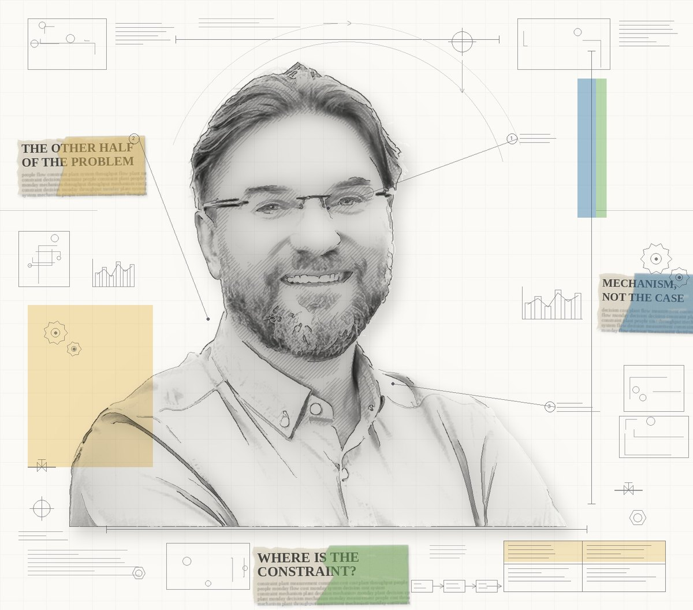

About

Nearly thirty years in continuous process manufacturing: process, utilities, energy, water, control systems. Today I run brewing processes and utilities at the Żywiec brewery, part of Grupa Żywiec.
Long enough to see the same pattern many times. The solution is calculated, agreed, approved, and it doesn't go in. Or it goes in and doesn't deliver. The cause is almost never technical. It sits in how the measurement system is built, where the constraint actually is, and what pays off for the people expected to run it.
That is the other half of the problem. Any engineer can handle the first half.
These pieces come from two sources: books I read in sequence and describe together with where I disagree, and mechanisms I have watched operate. I write about the mechanism, not the case: no company, plant, supplier or personal names, no absolute numbers. If a piece doesn't end with one thing to do on Monday morning, it isn't finished.
Published in Polish and English. These are not translations. The English version answers a different question.
Contact
Email is easiest: kontakt@jaroslawhoc.pl. Comments are open under every piece on Substack.